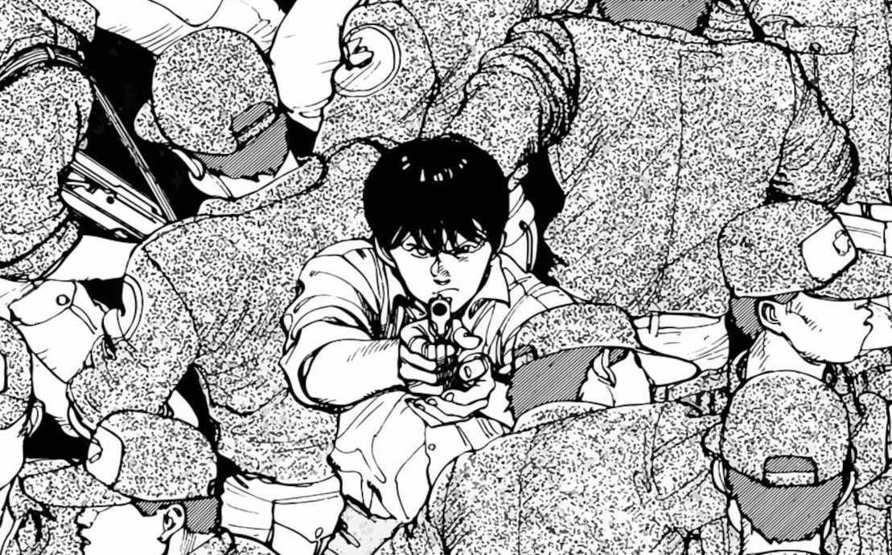

Guts, conocido como el "Espadachín Negro", vaga por un mundo medieval sombrío y despiadado portando una espada gigantesca y movido únicamente por una sed ardiente de venganza contra su antiguo líder y amigo, Griffith. Tras la trágica traición de la Banda del Halcón durante un evento cataclísmico conocido como el Eclipse, Guts lleva la Marca del Sacrificio, la cual atrae a demonios y horrores nocturnos sin descanso. Es una obra maestra del estilo 'dark fantasy' que explora la voluntad humana, el destino, la ambición y la supervivencia ante la más absoluta oscuridad.
Basada en la vida real del legendario espadachín Miyamoto Musashi, la historia comienza tras la sangrienta batalla de Sekigahara. Shinmen Takezo, un joven violento y marginado por su propia aldea, emprende un camino de autodescubrimiento a través de la espada para convertirse en el guerrero "invencible bajo el cielo". A medida que derrama sangre y enfrenta a duelistas letales en todo Japón, Takezo adopta el nombre de Musashi y descubre que el verdadero camino del guerrero reside en la filosofía, la paz mental y la comprensión de la vida. Destaca por un arte pictórico e hiperrealista impresionante.

En la década de 1970, un grupo de niños crea un "Libro de la Profecía" inventando una historia donde una organización maligna intenta destruir el mundo y ellos se convierten en los héroes que lo salvan. Décadas después, en el año 1999, Kenji Endo descubre que un culto misterioso liderado por una figura enigmática llamada "Amigo" está llevando a la realidad, paso a paso, cada una de las tragedias fantasiosas que ellos escribieron cuando eran niños. Kenji debe reunir a sus viejos amigos de la infancia para detener un apocalipsis orquestado por sus propios recuerdos.

Esta conmovedora y desgarradora obra sigue la vida de Punpun Onodera, un chico representado de forma surrealista como un simple pájaro de caricatura mientras habita un mundo humano realista. A lo largo de los años, presenciamos su transición desde la infancia escolar hasta la adultez temprana, enfrentando el colapso familiar, el primer amor, la soledad, la depresión y la dura realidad del crecimiento. Es una exploración psicológica profunda, cruda y bellamente ilustrada sobre la salud mental y la condición humana.

Durante el sangriento periodo de los Reinos Combatientes en la antigua China, Shin es un joven huérfano de guerra que sueña con salir de la servidumbre y convertirse en el Gran General de los Cielos. Tras un evento trágico, sus pasos se cruzan con el joven rey Ying Zheng, quien busca unificar toda China bajo un solo mandato por primera vez en la historia. Juntos emprenderán una brutal campaña bélica llena de estrategia militar, duelos legendarios, política y batallas multitudinarias a una escala colosal.

Tras fracasar en el Mundial 2018, Japón busca crear al delantero definitivo para ganar la Copa del Mundo.Para lograrlo, encierran a 300 jóvenes talentos en una prisión de alta tecnología llamada Blue Lock. Bajo un régimen despiadado, competirón entre sí para despertar su máximo egoísmo en la cancha. El fracaso es definitivo: quien sea eliminado jamás podrá jugar para la selección nacional.La historia sigue a Yoichi Isagi, un delantero que debe aprender a destruir los sueños de sus rivales y anotar él mismo si quiere sobrevivir y convertirse en la estrella del fútbol mundial.

Kirie Goshima y su novio Shuichi Saito viven en Kurouzu-cho, un pequeño pueblo costero atrapado bajo el influjo de una espeluznante maldición sobrenatural: la obsesión por las espirales. Lo que comienza como patrones extraños en el viento y conchas de caracol evoluciona hacia una locura colectiva donde la geometría misma del entorno y los cuerpos de los habitantes se tuercen y deforman en grotescas formas espirales. Es una obra cumbre del terror cósmico y del arte corporal inquietante.

En Tokio, criaturas antropomorfas llamadas "Ghouls" se esconden entre la sociedad, alimentándose exclusivamente de carne humana para sobrevivir. Ken Kaneki, un tímido estudiante universitario, sobrevive a duras penas al ataque de una chica Ghoul tras una cita desastrosa. Para salvarle la vida, los médicos le trasplantan órganos de su atacante, convirtiéndolo en un híbrido mitad humano y mitad Ghoul. Atrapado entre dos mundos sangrientos y hostiles, Kaneki debe lidiar con su nueva hambre voraz y la lucha por conservar su humanidad.

Ubicada en una futurista Neo-Tokio reconstruida tras una Tercera Guerra Mundial, la trama sigue a Kaneda, el líder de una banda juvenil de motociclistas. Cuando su amigo de la infancia, Tetsuo, sufre un accidente y es capturado por un proyecto militar secreto, comienza a desarrollar increíbles pero incontrolables poderes telequinéticos. A medida que los poderes de Tetsuo amenazan con destruir la ciudad entera, se revela la conexión con "Akira", una misteriosa entidad causante del cataclismo original. Es un hito fundamental del cyberpunk mundial.

En la Alemania de la posguerra fría, el doctor Kenzou Tenma es un eminente cirujano que decide arriesgar su carrera para salvar la vida de un niño gravemente herido llamado Johan Liebert. Años después, Tenma descubre que aquel niño ha crecido para convertirse en un sociópata carismático y despiadado que manipula a otros para cometer asesinatos masivos. Al ser culpado injustamente por los crímenes de Johan, Tenma abandona su vida profesional para perseguirlo a través de Europa y corregir el trágico error que cometió al salvarlo.
En un mundo medieval azotado por los "Yoma", monstruos devoradores de hombres que pueden adoptar apariencia humana, la única defensa de la humanidad es una organización misteriosa que crea guerreras híbridas mitad humanas y mitad Yoma, conocidas popularmente como Claymores. La historia sigue a Clare, una de las guerreras de menor rango, quien viaja exterminando monstruos mientras intenta mantener el control de su propia parte demoníaca. Con un estilo sombrío y batallas de espadas feroces, es un referente del género de fantasía oscura.

Hanamichi Sakuragi es un delincuente juvenil pelirrojo con un récord nefasto en el amor. Al entrar a la preparatoria Shohoku, intenta impresionar a Haruko, la chica de sus sueños, uniéndose al equipo de baloncesto, un deporte del que no sabe absolutamente nada. Aunque al principio solo busca llamar su atención, Hanamichi descubre un talento físico colosal y un amor apasionado por el juego. Junto a un equipo lleno de inadaptados con gran talento, intentarán llevar a Shohoku al campeonato nacional. Es el manga deportivo por excelencia.

Saitama es un superhéroe que entrenó tan duro que perdió todo su cabello y desarrolló un poder desmedido: es capaz de derrotar a cualquier enemigo, monstruo o amenaza alienígena de un solo puñetazo. Lejos de estar satisfecho, vive sumido en una profunda crisis existencial y en el aburrimiento extremo al no encontrar un rival que le exija esforzarse al máximo. Junto a su fiel discípulo cibernético Genos, busca hacerse un lugar en la Asociación de Héroes mientras lidia con la apatía de ser invencible.

Kei Kurono y su amigo Masaru Kato mueren atropellados por un tren al intentar salvar a un vagabundo. En lugar de pasar al más allá, despiertan en una habitación de hotel vacía en Tokio junto a otras personas recién fallecidas, dominada por una misteriosa esfera negra llamada Gantz. La esfera les provee trajes futuristas y armas de alta tecnología, forzándolos a participar en un letal juego de cacería contra alienígenas que viven ocultos en la Tierra. Cada misión es una matanza brutal donde deben sobrevivir si quieren recuperar sus vidas.
Basada en un arco clásico del universo de Astro Boy, la historia transcurre en un futuro donde los humanos y los robots de inteligencia artificial avanzada coexisten. Gesicht, un detective robot altamente perfeccionado que trabaja para la Europol, es asignado para investigar una serie de asesinatos misteriosos tanto de humanos influyentes como de los siete robots más poderosos y avanzados del planeta. Todos los escenarios del crimen presentan cuernos clavados en las cabezas de las víctimas, apuntando a la amenaza de un monstruo llamado Pluto.